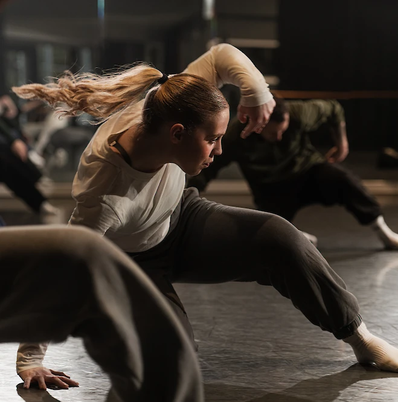
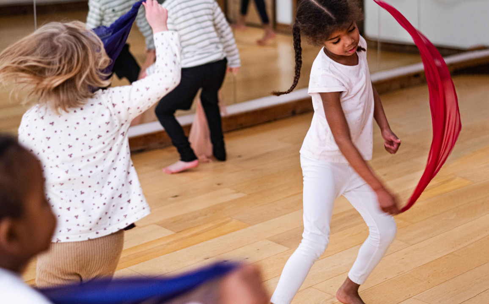
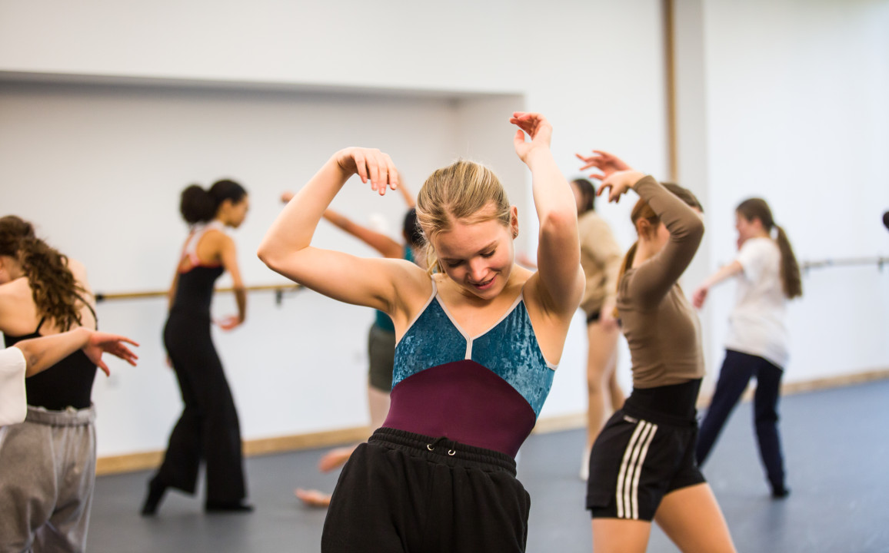

课程核心
- Progressive contemporary dance training
- Inclusive and student-centered learning
- Technique, performance and creativity together
- 培养学生可迁移的舞蹈能力与艺术思维
Contemporary Dance Pathway
让学生在技术、表演与创造力之间找到更完整的身体语言。

Overview
Rambert Grades 是由 Rambert 与 Rambert School 共同创立的现当代舞等级课程路径。它将专业舞台实践带入课堂，以开放、包容的方式培养学生的身体能力、创造力、表演力与个人声音。
在 JIAJING BALLET，Rambert Grades 不只是“多学一个现代舞体系”，而是帮助芭蕾学生打开更丰富的身体语言：他们会学习怎样移动、怎样表达，也学习如何在作品和即兴中提出自己的身体答案。



Three Strands
Rambert Grades 的 Grades 1–8 课程围绕三条核心线索展开。学生不只是学习动作本身，也会学习如何理解动作、诠释作品，并通过即兴与创编发展自己的艺术声音。
建立安全、有效率的移动方式，发展地面动作、重心转换、空间方向、跳跃与身体控制能力。
学习专业编舞家的 solo 材料，在结构清晰的作品中发展动态质感、舞台意识与个人诠释。
通过 stimulus、即兴和小组任务发展创编能力，让孩子在过程中形成自己的 movement score。
At JIAJING BALLET
我们的芭蕾训练以 American Ballet Theatre National Training Curriculum 为主线，而 Rambert Grades 则为学生打开另一扇门：从垂直、清晰、古典的身体训练，延展到地面、重心、流动、质感和创作。
Note: JIAJING BALLET is an independent studio. Rambert Grades and related marks are owned by Rambert Grades. Public wording should be reviewed before launch.
Start Here